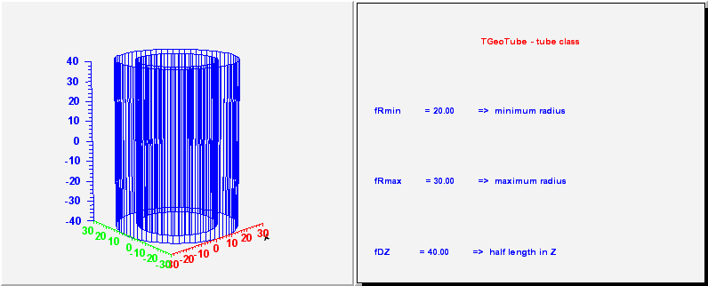
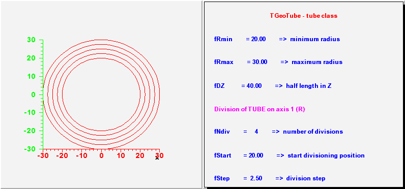
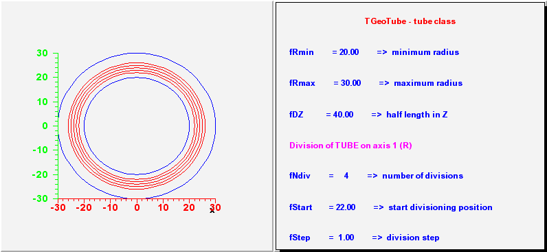
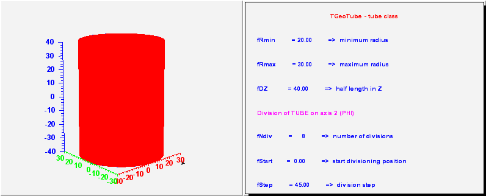
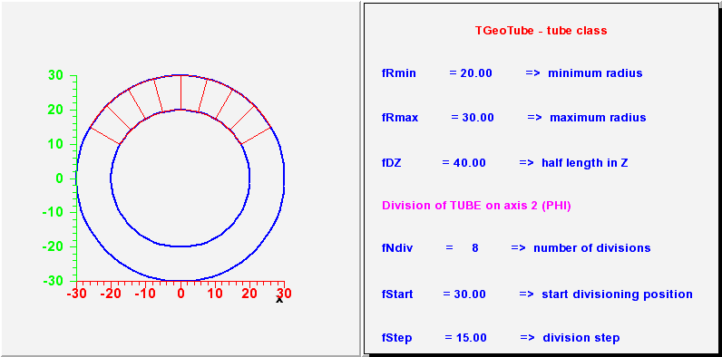
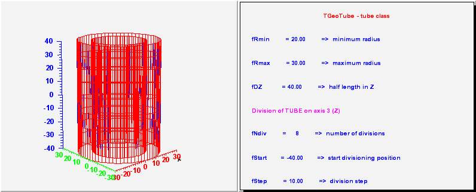
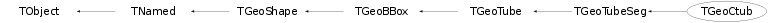

class TGeoCtub: public TGeoTubeSeg
TGeoTube - cylindrical tube class. It takes 3 parameters : inner radius, outer radius and half-length dz./*  */
/*  */
/*  */
/*  */
/*  */
/*  */
/*
 */
*/
TGeoTubeSeg - a phi segment of a tube. Has 5 parameters : - the same 3 as a tube; - first phi limit (in degrees) - second phi limit/*
 */
*/
/*
 */
*/
/*
 */
*/
/*
 */
*/
TGeoCtub - a tube segment cut with 2 planes. Has 11 parameters : - the same 5 as a tube segment; - x, y, z components of the normal to the -dZ cut plane in point (0, 0, -dZ); - x, y, z components of the normal to the +dZ cut plane in point (0, 0, dZ);/*
 */
*/
Function Members (Methods)
public:
protected:
| virtual void | TObject::DoError(int level, const char* location, const char* fmt, va_list va) const |
| virtual void | TGeoBBox::FillBuffer3D(TBuffer3D& buffer, Int_t reqSections, Bool_t localFrame) const |
| Int_t | TGeoShape::GetBasicColor() const |
| void | TObject::MakeZombie() |
| void | TGeoShape::SetOnBoundary(Bool_t) |
| void | TGeoShape::TransformPoints(Double_t* points, UInt_t NbPoints) const |
Data Members
public:
| enum TGeoShape::EShapeType { | kBitMask32 | |
| kGeoNoShape | ||
| kGeoBad | ||
| kGeoRSeg | ||
| kGeoPhiSeg | ||
| kGeoThetaSeg | ||
| kGeoVisX | ||
| kGeoVisY | ||
| kGeoVisZ | ||
| kGeoRunTimeShape | ||
| kGeoInvalidShape | ||
| kGeoTorus | ||
| kGeoBox | ||
| kGeoPara | ||
| kGeoSph | ||
| kGeoTube | ||
| kGeoTubeSeg | ||
| kGeoCone | ||
| kGeoConeSeg | ||
| kGeoPcon | ||
| kGeoPgon | ||
| kGeoArb8 | ||
| kGeoEltu | ||
| kGeoTrap | ||
| kGeoCtub | ||
| kGeoTrd1 | ||
| kGeoTrd2 | ||
| kGeoComb | ||
| kGeoClosedShape | ||
| kGeoXtru | ||
| kGeoParaboloid | ||
| kGeoHalfSpace | ||
| kGeoHype | ||
| kGeoSavePrimitive | ||
| }; | ||
| enum TObject::EStatusBits { | kCanDelete | |
| kMustCleanup | ||
| kObjInCanvas | ||
| kIsReferenced | ||
| kHasUUID | ||
| kCannotPick | ||
| kNoContextMenu | ||
| kInvalidObject | ||
| }; | ||
| enum TObject::[unnamed] { | kIsOnHeap | |
| kNotDeleted | ||
| kZombie | ||
| kBitMask | ||
| kSingleKey | ||
| kOverwrite | ||
| kWriteDelete | ||
| }; |
protected:
| Double_t | TGeoBBox::fDX | X half-length |
| Double_t | TGeoBBox::fDY | Y half-length |
| Double_t | TGeoBBox::fDZ | Z half-length |
| Double_t | TGeoTube::fDz | half length |
| TString | TNamed::fName | object identifier |
| Double_t | fNhigh[3] | normal to highet cut plane |
| Double_t | fNlow[3] | normal to lower cut plane |
| Double_t | TGeoBBox::fOrigin[3] | box origin |
| Double_t | TGeoTubeSeg::fPhi1 | first phi limit |
| Double_t | TGeoTubeSeg::fPhi2 | second phi limit |
| Double_t | TGeoTube::fRmax | outer radius |
| Double_t | TGeoTube::fRmin | inner radius |
| UInt_t | TGeoShape::fShapeBits | shape bits |
| Int_t | TGeoShape::fShapeId | shape id |
| TString | TNamed::fTitle | object title |
Class Charts
{kind=link}
{kind=link}
{kind=link}
{kind=link}

Function documentation
TGeoCtub(Double_t rmin, Double_t rmax, Double_t dz, Double_t phi1, Double_t phi2, Double_t lx, Double_t ly, Double_t lz, Double_t tx, Double_t ty, Double_t tz)
constructor
TGeoCtub(const char* name, Double_t rmin, Double_t rmax, Double_t dz, Double_t phi1, Double_t phi2, Double_t lx, Double_t ly, Double_t lz, Double_t tx, Double_t ty, Double_t tz)
constructor
void ComputeNormal(Double_t* point, Double_t* dir, Double_t* norm)
Compute normal to closest surface from POINT.
Bool_t Contains(Double_t* point) const
check if point is contained in the cut tube check the lower cut plane
Double_t GetAxisRange(Int_t iaxis, Double_t& xlo, Double_t& xhi) const
Get range of shape for a given axis.
Double_t GetZcoord(Double_t xc, Double_t yc, Double_t zc) const
compute real Z coordinate of a point belonging to either lower or higher caps (z should be either +fDz or -fDz)
Double_t DistFromOutside(Double_t* point, Double_t* dir, Int_t iact = 1, Double_t step = TGeoShape::Big(), Double_t* safe = 0) const
compute distance from outside point to surface of the cut tube
Double_t DistFromInside(Double_t* point, Double_t* dir, Int_t iact = 1, Double_t step = TGeoShape::Big(), Double_t* safe = 0) const
compute distance from inside point to surface of the cut tube
TGeoVolume * Divide(TGeoVolume* voldiv, const char* divname, Int_t iaxis, Int_t ndiv, Double_t start, Double_t step)
Divide the tube along one axis.
TGeoShape * GetMakeRuntimeShape(TGeoShape* mother, TGeoMatrix* mat) const
in case shape has some negative parameters, these has to be computed in order to fit the mother
Double_t Safety(Double_t* point, Bool_t in = kTRUE) const
computes the closest distance from given point to this shape, according to option. The matching point on the shape is stored in spoint.
void SetCtubDimensions(Double_t rmin, Double_t rmax, Double_t dz, Double_t phi1, Double_t phi2, Double_t lx, Double_t ly, Double_t lz, Double_t tx, Double_t ty, Double_t tz)
set dimensions of a cut tube
void SavePrimitive(ostream& out, Option_t* option = "")
Save a primitive as a C++ statement(s) on output stream "out".
Bool_t GetPointsOnSegments(Int_t npoints, Double_t* array) const
Fills array with n random points located on the line segments of the shape mesh. The output array must be provided with a length of minimum 3*npoints. Returns true if operation is implemented.
void GetMeshNumbers(Int_t& nvert, Int_t& nsegs, Int_t& npols) const
Returns numbers of vertices, segments and polygons composing the shape mesh.
const TBuffer3D & GetBuffer3D(Int_t reqSections, Bool_t localFrame) const
Fills a static 3D buffer and returns a reference.